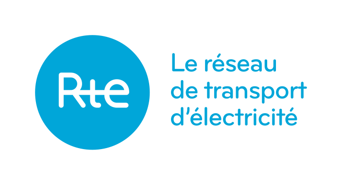

SNIR Cup • MonCO2
MonCO2
A propos
Vos données personnelles
Alimentation
Alimentation exclusive personnel
Boeuf (steak haché) • 41.43 kg CO2 eq/kg • 2400 calories/kg
Porc (brochette de porc) • 6.31 kg CO2 eq/kg • 1750 calories/kg
Poulet (filet de poulet) • 5.47 kg CO2 eq/kg • 1150 calories/kg
Poisson (accra de poisson) • 5.25 kg CO2 eq/kg • 2750 calories/kg
Blé (boulgour de blé) • 0.36 kg CO2 eq/kg • 3450 calories/kg
Genre
Homme adulte • 2500 calories/jour
Femme adulte • 2000 calories/jour
Consommation électrique personnel
≃ 0.05 kg CO2 eq/kWh • France
Normal • 14 kWh/jour
Faible • 8 kWh/jour
Importante • 20 kWh/jour
Calcul effectué à partir des données de
Agribalyse
est une base de données produite par l'ADEME permettant de connaître l'impact environnemental des produits agricoles en suivant la méthode de l'analyse du cycle de vie.

ECO2mix
est un outil simple d'utilisation créé par RTE pour aider les consommateurs à mieux connaître et mieux consommer l'électricité.
Vos résultats
Votre émission journalière est de
4.31 kg CO2/jour
dont
3.31 kg CO2/jour
pour votre alimentation et
1.00 kg CO2/jour
pour votre consommation électrique
À titre indicatif, le minimum ici atteignable était de
0.61 kg CO2/jour
et le maximum de
44.16 kg CO2/jour
.
Utiliser ces indicateurs pour optimiser vos émissions de CO2.